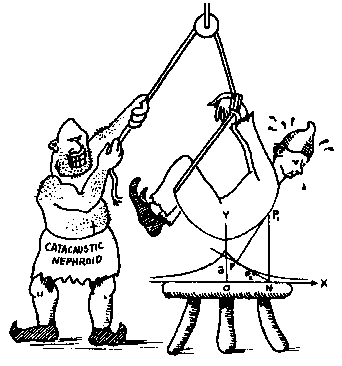
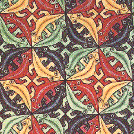
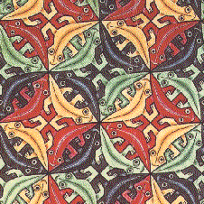

Signs for technical/specialized vocabulary
David Bar-Tzur
Links updated monthly with the help of LinkAlarm.

 Tesselations by M. C. Escher" HEIGHT="200">
Tesselations by M. C. Escher" HEIGHT="200">
Torture by tractrix1; Tesselations by M. C. Escher.2
EXPLANATION OF THE GLOSSING SYSTEM
(to understand how I describe the signs in this dictionary).
For content knowledge of how to use the physics terms in context, see Guided tutorial in physics for interpreters.
For negotiating and developing temporary signs, see Preparation and sign negotiation
For vocabulary lists to determine helpful signs for a specific discipline, see Vocabulary lists by topic.
- ta'anit (תענית)
- (1) [F] draws closed FTs across lips. (< the closing of the lips.) (2) A-GUILTY. (< beating the heart while confessing a list of sins, which occurs during the Jewish afternoon service of fast days.)
- tab
- ~ (key)
- T-A-B.
- ~ over [to the position you desire]
- T-A-B [open 8]-CL'poke tab key repeatedly'.
- Tabarra
- MUHAMMAD FAMILY THEIR ENEMY, CURSE, where the last sign is [5:] is held against mouth and is brought out as a shaken fist.
- Tabernacle
- ~
- (1) GOD 'S HOUSE CARRY-AROUND IN WILDERNESS. (2) T-CHURCH. For a QuickTime movie of this sign, see ASL browser - tabernacle. The portable place of worship and sacrifice that was carried about in the wilderness by the Jews.
- ~ (LDS [Mormon]
- T-A-B-E-R-N-A-C-L-E.
- ~ (Roman Catholic)
- HOST HOUSE.
- Tabernacles, Feast of
- (Feast of) ~ (Jewish)
- (1) (2h)[A] is shaken like the sign TOGETHER, but slowly and with an exaggerated movement. (2) (2h)[S], POs away, separate and then descend. (< palm branch that is shaken on this holiday.)
- ~ (World Wide Church of God)
- TENT.
- table (graphic)
- DH [4], PO away, FO up, brushes FT against NDH [5], PO towards, FO > DS.
- table tennis
- (1) T-A-B-L-E + [S] holds imaginary paddle and hits ball forehand, then backhand. (2) [B] acts as an imaginary paddle and hits ball forehand, then backhand.
- Tablets, the (of the Ten Commandments)
- TEN COMMANDMENT CARVE STONE.
- taboo
- DH [1] and NDH [B], POs ><, FOs up, strike palms and separate forcefully.
- t-account
- (2h)[1] forms a "T" + ACCOUNT. If you sign "T" ACCOUNT, it looks like "toilet account".
- tachrichin (תחריחין)
- WHITE CLOTHES FOR BURY. (Heb) "shroud."
- tacit
- (1) SUBTLE, where the second sign is DH [B], PO down, moves > NDS across NDH [B], PO up, while touching it. (2) DIRECT, DON'T-MEAN-TO-SAY. (3) [1] starts to move towards the palm of [B], PO away, FO up, but instead goes around the thumb and touches the backhand.
- tack weld
- TEMPORARY WELDING.
- tackle (Football)
- DH grasps "legs" of [V], FO down. For a movie of this sign, see Dictionary of Sign (ASL) - tackle.
- taco
- [B], PO towards, is inserted in [C], PO up, FO away.
- Taco Bell
- [B], PO towards, is inserted in [C], PO up, FO away + [O^], PO down, strikes palm of [B], PO > DS, FO up, twice. For a QuickTime movie of this sign, see ASL browser - Taco Bell.
- tactile
- ~ (Deaf-Blind)
- The NDH grasps the DH [5] by the wrist and both hands move in a circular motion (up, towards signer, down, and away) while the DH wiggles FTs.
- ~ (non-Deaf-Blind)
- TOUCH+.
- tactile communication
- TACTILE COMMUNICATE.
- tactile fingerspelling
- TACTILE FINGERSPELL.
- tactual
- See "tactile".
- Tadoma Method
- T-A-D-O-M-A METHOD + (2h)[B^ dot] are placed on face with DH on NDS and NDH on DS so that the fingers are under the chin and the thumbs are against the lips, thus demonstrating the position of the hands.
- tag (baseball)
- ~
- (1) [A] strikes upper arm with palm. (2) (2h)[5:], catch ball from above on NDS, brings hands to center as they change to (2h)[A], then the DH continues to move to other side and tags player below with ball.
- throw to someone to ~ the batter
- (1) [S], PO > NDS, FO away, flicks out index finger while moving away. (2) [S], PO > NDS, FO away, flicks out [H] while moving away.
- tahara (טהרה)
- PREPARE BODY FOR FUNERAL.
- Tahiti (Tahiti)
- (1) [H] stirs inside [O], PO > signer, FO > DS.(2) (2h)[T], POs > signer, are held with DH held high and NDH held at chest, both hands twist at wrists in place. (< from an indigenous dance.) To see the reference source for the sign(s) for this country or to look up other countries in the same geographical area, see Indigenous signs for countries. To find signs for cities within this country (some have no entries) see Indigenous signs for cities.
- Tahnach (תנ"ך)
- (Please don't sign JESUS~BOOK!) (1) GOD~BOOK. (2) HOLY BOOK. (3) B-LAW.
- tahor (טהור)
- (SPIRIT) CLEAN*.
- tail
- DH [1], PO > NDS, FO away, flutters FT, while covered by rounded [B], PO down, FO > DS. For a movie of this sign, see Dictionary of Sign (ASL) - tail.
- taillights
- (2h)[O^], PO > back, hands under armpits, open to (2h)[5^] as if turning on headlights.
- tails (suit)
- JACKET + (2h)[B] are held behind signer and slightly to the sides so the audience can see and FT flutter like the movement of tails.
- Taiwan (台湾)
- [S], PO away, FO up, twists at mouth. (< eating sugar cane.) To see the reference source for the sign(s) for this country or to look up other countries in the same geographical area, see Indigenous signs for countries. To find signs for cities within this country (some have no entries) see Indigenous signs for cities.
- take (media)
- ~ (n)
- (2h)[B], POs > signer, mime the look of the clapboard that is used to signal and label the beginning of a take. The wrist of the DH is placed against the FT of the index finger of DH FO > DS, then slices down until
- ~ (v)
- GO-AHEAD + sign above for the noun form.
- take advantage of
- ~ (general)
- (1) Middle finger of [open 8] strokes [B], PO up, FO away. This is often thought of as being negative, but it depends on the facial expression. (2) NDH palm is held out PO up and DH [5], PO > NDS, FO away, descends, grabs at an imaginary thing in the palm and ascends while still closed.
- ~ (sexually)
- (1) Middle finger of [open 8] strokes [B], PO up, FO away, with tongue against teeth like pronouncing the letter "L". (2) (2h)[5:], POs down, FOs away, touch thumbs and pivot alt. against each other with malevolent facial expression.
- take blood
- (1) [5^], FT towards inside of elbow, hands from inside elbow > DS while closing to [O^]. (2) [L] touches index finger to inside of elbow and withdraws it while bringing thumb to side of index finger (in plane of palm).
- take for granted
- THINK + NOTHING-TO-IT, where the second sign is (2h)[F], POs away, FOs up, shake from side to side antisymmetrically.
- takeoff (diving)
- NDH [B], PO down, FO away, DH [B^], PO > signer, FO away, bounds upward from "board" as NDH moves down at wrist under the weight.
- take off (rocket)
- [R] blasts off from [B], PO up or down. For a QuickTime movie of this sign, see ASL browser - blast-off.
- take the stage
- (1) (2h)[5:], POs down, FOs away, move up while closing to (2h)[S] + STAGE. (2) DH [1], PO away, FO up, moves forward (on stage), and NDH [5], PO down, changes FO from away to point > DH as if audience is spellbound by the actor who has moved forward on the stage.
- take turns
- [L], PO down, points thumb to one person, then supinates and points to another.
- take up
- (2h)[5:], POs down, FOs away, ascend while closing to (2h)[S].
- talent (actor)
- (1) PERFORM AGENT. (2) SKILL AGENT.
- talkative
- (1h)[C^], FO away, opens and shuts at mouth as if jabbering. For a QuickTime movie of this sign, see ASL browser - talkative.
- talk to oneself
- (2h)[I], POs towards, FOs up. DH touches nose (some people omit this part), then touches little finger side to little finger side of NDH 3x.
- tallit (טלית)
- ~ [gedolah גדולה]
- (1) (2h)[C], POs > signer, FOs ><, FTs run down chest as if tracing the outline of the shawl. (2) (2h)bC-CL'outline of shawl going down both sides of chest'.
- ~ ketanah (קטנה)
- (2h)[G] touch the hips and move outwards 3x while closing to (2h)[bO] + UNDER SHIRT.
- Talmud (תלמוד)
- [A dot], PO down, FO away, moves thumb 3x in upward arc with slight movements to the NDS.(< a gesture that yeshiva students use while they are arguing points of Jewish Law.)
- talmud torah (תלמוד תורה)
- JEWISH SCHOOL BEFORE YESHIVA.
- tamai (טמא)
- (SPIRIT) + [S] is held under chin and opens explosively into a [5) with an appropriately negative facial expression.
- tampon
- (1) NDH [O], PO > signer, FO > DS, DH [bX] inserts tampon into NDH from below. (2) [A] knocks palm side at DS jaw with pc + Index finger is inserted in NDH [S], PO > signer, FO > DS.
- tangent
- ~ to (a line or surface)
- TOUCH.
- ~ of an angle
- T-A-N.
- tangential (component)
- TOUCH WHERE? X,1-CL, THAT POINT. In the classifier, the NDH represents the curve and the DH represents a tangent to that curve. The hands are oriented so that they show the actual orientation of the line to the curve visually.
- tangible asset
- "A", TOUCH CAN.
- tanh (read as "hyperbolic tangent")
- T-A-N-H.
- tantalum
- T-A. For more information on this and other elements, see The elements. And for fun, see Elements by Tom Lehrer. To see this song with captions, go to The Elements song by Tom Lehrer.
- tantrum
- (1) [5] slaps top of [S], PO > DS, and moves upwards while twisting at wrist. For a QuickTime movie of this sign, see ASL browser - tantrum. (2) (2h)[S], POs > signer, FOs ><, alt. pound the air and if possible the legs alt. stamp the ground.
- tape
- ~ (for joining materials)
- (2h)[A], POs away, FOs up, thumbs overlap and then hands separate.
- ~ (measuring)
- MEASURE + (2h)[A], POs down, FOs away, touch thumbs and separate.
- ~ (reel-to-reel)
- (2h)[T], POs away, FOs up, hands circle symmetrically, approaching at the top and separating at the bottom of their cycles.
- ~ (v, to audiotape)
- [O^] touches FTs to [B], PO up, then changes to [B] and touches NDS palm to palm + AUDIOTAPE.
- ~ (v, to videotape)
- [O^] touches FTs to [B], PO up, then changes to [B] and touches NDS palm to palm + VIDEOTAPE.
- taperecorder
- (1) Index finger points to ear + (2h)[open 8], PO down, FO away, indicates the movement of the tape in the recorder. (2) Same as (1) but with index fingers throughout.
- taper (Swimming, Sports)
- IMPROVE is executed backwards, that is down the arm.
- target
- GOAL.
- target language
- T-L.
- tart (sour)
- TASTE but with a negative affect. For a movie of this sign, see Dictionary of Sign (ASL) - tart.
- Tashlich (תשליך)
- PRAY SIN CAST-INTO WATER.
- task
- T-A-S-K.
- tassel
- GRADUATE + [G] dangles from the location of a tassel hanging from a graduation cap. For a QuickTime movie of this sign, see ASL browser - tassel.
- tatoo
- Index finger FT of [L] circles area that has a tatoo.
- tau,

- DH [1], PO down is held above and touches middle joint to NDH [1:], PO > DS, FO up.
- tau fermion ()
- Form a tau in the air (DH [1], PO down is held above and touches middle joint to NDH [1:], PO > DS, FO up) + PARTICLE.
- tau neutrino (
 )
) - Draw a nu in the air and then form a tau (DH [1], PO down is held above and touches middle joint to NDH [1:], PO > DS, FO up) that is, subscripted.
- Tawalla
- LOVE MUHAMMAD FAMILY.
- Tawhid (التوحيد)
- ALLAH ONE*, where the first sign is (1) GOD but mouth "Allah", or (2) [1], PO away, FO up, ascends. For a film of this Saudi sign, see God Almighty..
- tax
- (1) COST. For a QuickTime movie of this sign, see ASL browser - tax. (2) [T] is held in the fingerspelling position then the hand is twisted to [X], PO towards.
- TB (tuberculosis)
- T-B + LUNGS, that is, (2h)[B^], touch chest with FTs and travel up and down several times. For a QuickTime movie of this sign, see ASL browser - tuberculosis.
- teacher (LDS [Mormon] title)
- TEACHER.
- teammate
- (1) T-GROUP + ROOMMATE. (2) TEAM TWO-OF-US.
- teamwork
- T-GROUP COOPERATE.
- techiat hametim (תחיית המתים)
- DEAD PEOPLE, GOD (2h)alt.REMIND, HIT* THEY LIVE.
- technetium
- T-C. For more information on this and other elements, see The elements. And for fun, see Elements by Tom Lehrer. To see this song with captions, go to The Elements song by Tom Lehrer.
- technical foul
- (2h)[1], DH taps bottom middle of finger sharply against NDPO > DS, FO up.
- technique
- (1) WAY. For a QuickTime movie of this sign, see ASL browser - technique. (2) METHOD. (3) TECHNOLOGY.
- teetotaler
- [U dot:] or [bC] brings imaginary drink to lips and tilts once + NEVER.
- tefillah (תפילה)
- (1) (2h)[B], FOs up, are pressed together and move downward 1x. (2) (2h)[B], FOs up, are pressed together and move downward 2x.
- tefillin (תפילין)
- The NDH [S] arm is extended and the DH [bX] is held above. An imaginary strap is wound around the wrist.
- Tefutsot (תפוצות)
- ~ (in reference to Jews)
- JEWISH PEOPLE OUTSIDE ISRAEL.
- ~ (in reference to the event or process of dispersion)
- JEWISH SPREAD-OUT.
- Tehillim (תהילים)
- (1) P-MUSIC. (2) P-S-A.
- Tehillot (תהילות)
- (1) P-MUSIC. (2) P-S-A.
- Telecommunication Industry Association
- T-I-A.
- telecommunication
- T-E-L-E- COMMUNICATE. (2) Like COMMUNICATE, but DH is a [Y], oriented like TELEPHONE.
- telegram
- (1) FT of [X] taps along [1], PO > DS, while moving away + RECT-CL, that is, (2h)[L], touch FTs and move away while closing. (2) [open 8] taps palm of [B], PO up, while moving away. For a QuickTime movie of this sign, see ASL browser - telegram.
- telegraph
- (1) FT of [X] taps along [1], PO > DS, while moving away. (2) [open 8] taps palm of [B], PO up, while moving away. For a QuickTime movie of this sign, see ASL browser - telegraph.
- telepathy
- (2h)[S] are held with FTS facing one another with one at the temple and the other in high neutral space. The two HSs flick their index fingers at each other repeatedly as if sending a message.
- telephoto lens
- (2h)[C] form a tube at the eyes and the DH moves away as if zooming in for a shot.
- teleprompter
- T-P.
- telescope
- (2h)[C], hold telescope and focus it, DH closer to signer. For a QuickTime movie of this sign, see ASL browser - telescope.
- television interference
- T-V-I.
- tellurium
- T-E. For more information on this and other elements, see The elements. And for fun, see Elements by Tom Lehrer. To see this song with captions, go to The Elements song by Tom Lehrer.
- temperature
- ~ coefficient
- T-C.
- ambient ~
- TEMPERATURE + DH [5], PO down, circles around NDH [1], FO up.
- temple
- ~ (Buddhist, Hindu, Jewish)
- T-CHURCH. For a QuickTime movie of this sign, see ASL browser - temple. Buddhists and Hindus use this term for their houses of worship, and the English term can be used to refer to any structure wherein a sacrifice is offered. Jews originally used this to refer to the Temple in Jerusalem, but it is now used by Reform Jews to refer to their place of worship. Conservative and Orthodox Jews call theirs a "synagogue".
- ~ (LDS [Mormon])
- [1] makes a circle with FT while pointing > NDS and comes to rest, FT on FT, on NDH [1] which points upwards (< statue of the angel Moroni on the temple's spire).
- tempo
- ~ (Music)
- (2h)[5], play drums. For a QuickTime movie of this sign, see ASL browser - tempo.
- ~ (Theater)
- TIME PROCESS.
- temporal lobe(s)
- (1h) if singular (lobe), (2h) if plural (lobes): FT of [5:] touch or tap lower side(s) of head.
- temporary restraining order
- (1) T-R-O. (2) SHORT TIME STOP ORDER.
- tempt (other person)
- (1) (2h)[bX], POs ><, FOs away, NDH in front of DH, move forward 2x with jabbing movements like stabbing someone with a pitch fork. (2) (2h)[bX], POs ><, FOs away, NDH in front of DH, move backward 2x with short movements like pulling someone by a rope.
- tempted (by other person), temptation
- FT of [X] taps against elbow. For an animated gif of this sign, see Animated dictionary of religious signs - Deaf Missions: Tempt.
- tenayim (תנאים)
- ENGAGE + [H] contacts NDPO up like SIGN-NAME but does it twice, first close to FT and then close to wrist (=CONTRACT).
- Ten Commandments
- Generally people sign TEN COMMANDMENT, but I did see an interpreter for a televangelist sign (2h)[A dot] touch thumbs to the corners of the mouth and move away diagonally to the respective sides, similar to the movement for ANNOUNCE. I have no idea how widespread this is, but it is certainly interesting since it is a kind of number incorporation, [A dot] being the HS for TEN.
- t(e)shuvah (תשובה)
- (1) R-CHANGE. For a QuickTime movie of this sign, see ASL browser - repent. (2) SORRY.(3) GET-#BACK-WITH-God.(4) CLEAN OFFER-TO-God.
- Tenebrae service (Lutheran)
- DARK SERVE.
- tennis
- (1) [T] moves like a racquet being swung from side to side. (2) [S] holds imaginary racquet and hits ball forehand, then backhand.
- tense
- ~ (emotion)
- (2h)[5:], PO > signer, FOs up, are held low and FT wiggle.
- ~ (time)
- TIME + [B^], PO > NDS, FO away, moves to and fro showing the different spaces for past, present, and future.
- tensile
- (2h)[X], POs > signer, FOs <>, two hands pull away with effort as if exerting a tension + STRONG POSS.
- tension
- (2h)[X], POs > signer, FOs <>, two hands pull away with effort as if exerting a tension.
- tera- (1012)
- T- [plus the unit abbreviation].
- terahertz
- T-H-Z.
- terbium
- T-B. For more information on this and other elements, see The elements. And for fun, see Elements by Tom Lehrer. To see this song with captions, go to The Elements song by Tom Lehrer.
- term (in an equation)
- WORD.
- terminal
- ~ (Computers)
- (2h)[T], outline a square. For a QuickTime movie of this sign, see ASL browser - terminal.
- ~ (end point)
- T-END.
- ~ (Health Science)
- LEAD-TO DEATH WILL.
- terminate and stay resident
- T-S-R.
- terrestrial planet
- PLANET LIKE EARTH, where the first sign is [P], PO down, FO > NDS, orbits around [1], PO > DS, FO up.
- territory
- T-E-R-R-I-T-O-R-Y.
- tertiary
- [3], PO down, FO away, supinates like the sign THIRD, but strikes the thumb of NDH [A dot], PO > DS, FO away.
- tesla
- "T".
- testament (Relgion)
- T-LAW. For an animated gif of this sign, see Animated dictionary of religious signs - Deaf Missions: Testament.
- testator
- SELF SIGN-NAME W-I-L-L.
- testicles
- ~
- (2h)[5:], POs up, FOs away, alt. rise and fall rapidly for the noun, and slowly and symmetrically to indicate the action itself.
- testicular self-exam
- TESTICLES, SELF CHECK.
- testify
- ~ (in court)
- (1) (2h)[B] held with DH touching Bible and NDH up in an oath gesture. For a QuickTime movie of this sign, see ASL browser - testify. (2) NDH [B] extended as if touching Bible and DH makes small vertical circles at mouth like the sign SAY.
- ~ (Evangelical)
- (1) LECTURE. (2) T-LECTURE.
- testimonial
- TESTIFY SUPPORT++.
- testimony
- (in court)
- TESTIFY PUT-DOWN-ON-PAPER++"moving down palm".
- ~ (Evangelical)
- (1) LECTURE. (2) T-LECTURE.
- test tube
- (1) T-T. (2) Use a (2h) F-CL to show the shape of the test tube.
- test tube clamp/holder
- T-T HOLD.
- test tube with side arm
- (2h)[F] shows vertical tube and with NDH in place, DH [F] shows side arm.
- tevillah (טבילה)
- BAPTISM.
- Texas Instruments
- T-I.
- text
- WORD"each".
- textual criticism (Christianity)
- JESUS BOOK CORRECT.
- texture (food, material)
- (1) [open 8] strokes [B], PO down, FO away, towards the signer. (2) (2h)[O^], POs up, FOs away, FTs are held together while thumbs rub against FTs. For a QuickTime movie of this sign, see ASL browser - texture.
- Thailand (Prathes Thai)
- [1] touches nose then moves downward. (< elephant.) To see the reference source for the sign(s) for this country or to look up other countries in the same geographical area, see Indigenous signs for countries. To find signs for cities within this country (some have no entries) see Indigenous signs for cities.
- thai stick (drugs)
- (1) Hold out NDH [I], PO > signer, FO > DS, and spiral DH index finger around the NDH pinkie while moving > DS. (2) Hold [H], PO > signer, FO up, at neck and descend straight down chest as if indicating "tie".
- thallium
- T-L. For more information on this and other elements, see The elements. And for fun, see Elements by Tom Lehrer. To see this song with captions, go to The Elements song by Tom Lehrer.
- thalamus
- T-H-A-L-A-M-U-S.
- thankful
- (2h)THANK-God++.
- thanksgiving (Religion)
- (1) (2h)THANK-God++. (2) (2h)THANK-God++ (2h)GIVE-TO-God + hands open > God.
- theater games
- PERFORM GAME.
- Thee
- HONORIFIC-INDEX, that is [B], PO up, FO > God moves down slightly.
- theft
- [V], PO down, bends FT rapidly while supinating and approaching signer, as if something were stolen.
- theme
- TOPIC.
- theodolite
- (2h)[O], are held to DS eye with DH in front of NDH as if looking through a theodolite (surveying scope) and DH is pulled forward once + [3] modified to mimic the three legs of a tripod strike FT against the palm of [B], PO up, FO away.
- theology
- (1) T-RELIGION. For a QuickTime movie of this sign, see ASL browser - theology. (2) L>T-RELIGION. (3) ND [B], PO down is held behind and touching DH [O] to represent the Greek letter "theta", .
- theology of displacement
- GOD PICK-us US, REPLACE JEWISH.
- Theophany of our Lord
- JESUS BAPTISM WEEK.
- The Orthodox Caliphs (الخلفاء الراشدين)
- This is hard to explain, so I suggest you look at the link provided, but if it is not there: DH [S], PO > signer, FO > NDS, NDH curls around DH from above. DH opens to a [4], while the NDH is still curled around the dorsum. For a film of this Saudi sign, click on Righteous Caliphs. (< FOUR FRIENDS [of Allah])
- Theotokos
- MARY CARRY GOD INSIDE-SELF.
- therapy
- T-HELP. For a QuickTime movie of this sign, see ASL browser - therapy.
- Theravada
- OLD WISE THEIRS+.
- there exists (inverted E, Math)
- NDH [1] is placed behind fingers of [W], PO towards, FO > NDS.
- therefore (Logic)
- [bX] draw the three dots that form a triangle and are math notation for "therefore". For a QuickTime movie of this sign, see ASL browser - therefore.
- thermal
- [5:] scratches up chin slightly several times. Notice the difference between this and HOT.
***
- thermodynamics
- T-H-E-R-M-O + .
- thermometer
- FT of [1] taps mouth. For a QuickTime movie of this sign, see ASL browser - thermometer.
- thermostat
- (1) (HEAT) [5:] touches FT to [B], PO > DS, FO away, and DH twists. (2) TERMPERATURE CONTROL.
- The Serpent
- [V:], PO down, starts at mouth and spirals outward. For a QuickTime movie of this sign, see ASL browser - serpent.
- theta,

- DH [1], PO down, FO > NDS, is held in front of (or behind) NDH [O], PO > DS.
- Thevenin's Theorem
- T-H POSS. THEORY.
- thevenize
- TRANSLATE-TO T-H.
- thiamine
- "T".
- thick
- ~ (in dimension)
- [C], PO > signer, FO > NDS, descends with pc.
- ~ (like molasses)
- (2h)[5:] are held close to neck on their respective sides with PO > neck and move in a slight jerk towards the neck.
- thin
- ~ (in dimension)
- [G], PO > signer, FO > NDS, moves down signer's body without touching with hu.
- ~ (not thick like molasses)
- NOT THICK.
- Thine
- YOUR(S)-God.
- thin film detector
- T-F-D.
- thin film electroluminescent
- T-F-E-L.
- thin film transistor
- T-F-T.
- thin small outline package
- T-S-O-P.
- third base
- (1) 3-B. (2) 3-B-3-B is signed rapidly.
- Third John (Ἰωάννου γ)
- THIRD J-O.
- third party applications
- T-P-A.
- 35 mm
- THIRTY-FIVE M-M.
- thoracic cavity
- (2h)[Bb], POs down, FOs <. There are two movements that happen simultaneously: (1) DH starts at NDS shoulder and moves across torso to the DS shoulder, and (2) NDH starts at DS just below ribs and moves across body to the DS + INSIDE-SELF. For a QuickTime movie of this sign, see ASL browser - thorax.
- thoracic region
- (2h)[Bb], POs down, FOs <. There are two movements that happen simultaneously: (1) DH starts at NDS shoulder and moves across torso to the DS shoulder, and (2) NDH starts at DS just below ribs and moves across body to the DS. For a QuickTime movie of this sign, see ASL browser - thorax.
- thorax
- (2h)[Bb], POs down, FOs <. There are two movements that happen simultaneously: (1) DH starts at NDS shoulder and moves across torso to the DS shoulder, and (2) NDH starts at DS just below ribs and moves across body to the DS. For a QuickTime movie of this sign, see ASL browser - thorax.
- thorium
- T-H. For more information on this and other elements, see The elements. And for fun, see Elements by Tom Lehrer. To see this song with captions, go to The Elements song by Tom Lehrer.
- Thou
- HONORIFIC-INDEX.
- thousandths
- Change to decimal form. For example, "two one-thousandths" would become PERIOD ZERO ZERO TWO.
- thread
- (2h)[F], hands mime pulling a threaded needle upwards. For a movie of this sign, see Dictionary of Sign (ASL) - thread.
- three dimensional
- THREE "D". Note: The PO of the THREE is towards the signer because it is an adj.
- 3 on 1 fast break
- Sign FOLLOW with DH [3] and NDH [1].
- 3 point field goal
- (1) THREE (PO > signer) + (2h)[1], DH taps bottom middle of finger several times against NDPO > DS, FO up + F-G. (2) Hold (2h)[B], POs ><, above head.
- three-quarter profile
- THREE-QUARTER + [1], PO > signer, FO up, pronates PO to face away from signer.
- 3-shot
- 3 S.
- throat
- G-CL travels down the neck. For a QuickTime movie of this sign, see ASL browser - throat.
- throat culture
- bO-CL sticks swab down throat + [X] scrapes FT against inside of cheek + ANALYZE.
- throne
- (1) The sign SIT is pulled > signer and up. (2) SIT + (2h)B^-CL 'hands on arms of throne'.
- throughput
- THROUGH PUT.
- thrush
- T-H-R-U-S-H.
- thulium
- T-M. For more information on this and other elements, see The elements.
And for fun, listen to Tom Lehrer singing the "Song of the elements" at Flashimation.
- thunder
- Touch ear with index finger then (2h)[S], PO down, FO away, move antisymmetrically from side to side while mouthing "pow". For a QuickTime movie of this sign, see ASL browser - thunder.
- thunderbolt
- [1] makes a zig zag in the air. For a QuickTime movie of this sign, see ASL browser - thunderbolt.
- thunderstorm
- (2h)[1] make antisymmetric zig-zags in the air. For a QuickTime movie of this sign, see ASL browser - thunderstorm.
- Thy
- YOUR(S)-God.
- tiara
- (2h)(L:) place crown on head + [4], PO away, FO up, is placed at forehead.
- Tibet
- [1] touches corner of eye, then forms [bO] and circles in a plane parallel to the floor. (< appearance of eyes and the prayer wheel that Tibetans use.) To see the reference source for the sign(s) for this country or to look up other countries in the same geographical area, see Indigenous signs for countries. To find signs for cities within this country (some have no entries) see Indigenous signs for cities.
- tickle
- Tickle under chin with fluttering [5:] and appropriate facial expression. For a movie of this sign, see Dictionary of Sign (ASL) - tickle.
- tide
- NDH [B], PO down, FO away, serves as the shore and DH [B^], PO > signer, FO > NDS, hops > NDS and then backward.
- tie
- (1) [N], PO down, FO away, circles horizontally under chin and then descends. (2) [G] or [bC] traces FT down chest from under chin.
- tiger
- (2h)[5:], run FTs across cheeks like tiger stripes. For a QuickTime movie of this sign, see ASL browser - tiger.
- tight
- (1) The hands are squeezed tightly like the final part of TRUST, and the shoulders hunch inward tightly. For a QuickTime movie of this sign, see ASL browser - tight. (2) Sign FLEXIBLE but with the NDH FTs refusing to flex.
- tighten
- MAKE TIGHT.
- tights
- CLOTHES + (2h)[5] grasp legs tightly just above knees and pull up with effort.
- tilda
- Draw tilda (~) with index finger or [bO].
- tile
- T-I-L-E.
- tilt (camera)
- NDH [1] is held to the wrist of [B], PO away, FO up, which tilts PO in appropriate direction.
- Timber Fest
- [B], PO away, FO away, chops near elbow of NDH [5], PO > signer, FO up. add to namsins too
- timbre (pronounced "tom-b", music term for quality)
- T-I-M-B-R-E.
- time
- ~ (instant, moment)
- [X:] touches wristwatch area. For a QuickTime movie of this sign, see ASL browser - time.
- ~(-period)
- T-HOUR. For a QuickTime movie of this sign, see ASL browser - time.
- ~ (sports)
- ~ (n)
- [C dot] held like looking at stopwatch and thumb clicks it twice rapidly.
- ~ (v)
- [C dot] held like looking at stopwatch and thumb clicks it once while hand descends for emphasis.
- change in ~ (
 T)
T) - TRIANGLE "T", where TRIANGLE represents the letter "delta" ().
- time base corrector
- (1) TIME BASE CORRECT. (2) T-B-C.
- time clock
- TIME + [S] stamps its small finger side against the palm of NDH [B].
- time code generator
- TIME C-O-D-E G-MAKE.
- time code reader
- TIME C-O-D-E READ.
- time constant
- T-C.
- time-consuming
- TIME + (2h)[B^], POs > signer, FOs up, are held at mouth level and zoom past cheeks as if being wolfed down.
- time dilation
- TIME SLOW + (2h)[5], POs down, FOs away, descend slightly and stop, then descend more and stop, three times.
- time division multiplexing
- T-D-M.
- time domain (function)
- Draw a lowercase sigma (
 ) in the air.
) in the air.
- time domain reflectometry
- T-D-R.
- time elapsed
- TIME RUN-OUT, HOW-MUCH?
- time out (Sports and figuratively)
- (2h)[B], DH strikes bottom middle of hand several times against FT of NDPO > DS, FO up.
- time-period
- T-HOUR. For a QuickTime movie of this sign, see ASL browser - time.
- timer (Sports)
- (1) C dot-CL'mimes clicking stopwatch' + AGENT. (2) TIME AGENT.
- time sharing
- T-S.
- timing (Theater)
- TIME EXACT.
- tin
- S-N. For more information on this and other elements, see The elements. And for fun, see Elements by Tom Lehrer. To see this song with captions, go to The Elements song by Tom Lehrer.
- tip in (Basketball)
- [B], PO away, FO up, moves forward and bends at wrist slightly.
- tires
- ~
- (2h)[1], POs > signer, FOs ><, circle more broadly to show tires. There is a smaller movement for "wheels".
- (classifier for) ~
- To emphasize how the tire surface in contact with the road behaves, use (2h)[C], POs up, FOs away, as classifiers.
- Tisha b'Av
- NINTH DAY, (JEWISH MONTH) A-V.
- tissue
- FT of [1] is rubbed against [B], PO down, FO away.
- titanium
- T-I. For more information on this and other elements, see The elements. And for fun, see Elements by Tom Lehrer. To see this song with captions, go to The Elements song by Tom Lehrer.
- tithe
- ONE-TENTH.
- Titus (New Testament)
- T-I-T-U-S.
- title
- TOPIC.
- titrate
- (2h)[F], POs ><, FOs away, show a vertical test tube, and with NDH left in place, use a [bO] to turn on an imaginary flame below the test tube.
- titration
- DH bX-CL'open and closes stopcock', NDH C-CL'holds beaker under buret, then swirls after DH stops moving'.
- Titus (Πρὸς Τίτον)
- T-I-T-U-S.
- toast
- ~ (n)
- (1) FT of DH [V], PO away, FO > NDS strike palm of [B], PO > DS, FO away, then both hands twist so that DH can strike back hand of NDH. (< testing toast with a fork to make sure it's done. (2) #TOAST, which looks like T-A-T with no movement of the wrist and thumb rapidly slides under index finger.
- ~ (v)
- MAKE (LIKE) TOAST. the middle sign is added if what is toasted is other than bread, such as marshmallows.
- toaster
- TOAST MACHINE.
- tobacco
- [B^] brings FT to cheek and rubs in a circle against it.
- toboggan
- [B^], PO up, slips across palm of [B]. For a QuickTime movie of this sign, see ASL browser - toboggan.
- toes pointing (diving)
- T-O-E-S + (2h)[B], POs away, FOs up, bend at wrist to POs down, FOs away. TOES CURLED NOT.
- toggle
- (2h)[V], NDPO up, DPO down, FOs ><, exchange POs several times.
- Togo
- (1) [T], PO > signer, rubs chest. (2) (2h)[T], POs > signer, alt. beat drums. To see the reference source for the sign(s) for this country or to look up other countries in the same geographical area, see Indigenous signs for countries. To find signs for cities within this country (some have no entries) see Indigenous signs for cities.
- toilet
- "T".
- toivel
- MAKE DISH KOSHER, HOW? WATER (2h)A-CL"immerse in water".
- tolerance
- ~ (of drugs)
- INFLUENCE BODY NONE.The ability of the body to ingest a drug without noticeable effect, which increases with increasing drug use. This also includes alcohol, of course.
- ~ (of people)
- GROUP NOT SAME-AS-me/ us, LEAVE-ALONE.The willingness to grant to other people equal rights and freedom from persecution and oppression, irrespective of their gender, race, religion, sexual orientation, language, nationality, ability status, marital status, etc. 3
- tomboy
- Thumbside of [T] and then [B] strikes at DS temple.
- tone
- T-O-N-E.
- tongs
- FOOD + [G], PO down, pinches FT together repeatedly. For a movie of this sign, see Dictionary of Sign (ASL) - tongs.
- tongue
- [1] touches or taps on extended tongue.
- tongue blade (depressor)
- [H], pushes down on extended tongue.
- tongues, speaking in
- HOLY SPIRIT OVERWHELM, (2h)SPEAKwg STRANGE.
- tongue stud
- [bO] strikes middle of tongue.
- tonsillectomy, tonsillitis
- [V] bends to [V:] while pulling away from side of neck. For a QuickTime movie of this sign, see ASL browser - tonsillitis.
- tonsils
- [V] bends to [V:] while pulling away from side of neck + (2h)[1] tap tonsils on respective sides. For a QuickTime movie of the first sign, see ASL browser - tonsillitis.
- tools
- T-O-O-L-S.
- too much
- (2h)[B^], POs <>, FOs up, FTs touch, then moves in an intensive upward arc that approaches the signer. By intensive, I mean that the beginning of the movement is slow and then speeds up rapidly at the end.
- top (quark)
- (2h)[1], DPO down makes the cross piece on a "T" by touching midpoint to FT of NDPO away, FO up PARTICLE.
- top-down
- TOP + (2h)[5], POs down, FOs ><, move down while wiggling.
- top hat
- TOP HAT + (2h)[C], POs ><, rise from top of head.
- topic
- (2h)[V], PO away, FOs up, FTs are bent twice in place.
- topknot (hairdo)
- (HAIR +) [5:] touches FT to top of head.
- top-priority
- Palm of [5] taps against thumb of NDH [5], PO > signer, FO > DS.
- top surgery
- SURGERY FROM-WAIST-UP.
- Torah
- (1) (2h)[S], POs up, twist twice while separating, as if unrolling a scroll. (2) The previous sign with (2h)[C]. (3) The previous sign with (2h)[T].
- torch
- (2h)[S] mime holding and torch, and then the DH moves like a flame travelling upwards and the NDH staying in place. For a movie of this sign, see Dictionary of Sign (ASL) - torch.
- tornado
- (1) (2h)[L], touch thumbs with FT > opposite side, and travel together in a horizontal circle. For a movie of this sign, see Dictionary of Sign (ASL) - tornado. (2) (2h)[open 8], FTs circle each other while moving > DS. For a QuickTime movie of this sign, see ASL browser - tornado.
- torque
- ~ (n)
- DH [X], PO down, FO > NDS, touches the top of NDH [1], PO > DS, FO up.
- ~ (v)
- [S], PO down, FO away, twists forward with NDH [1], PO down, FO > DS, as if the DH were exerting a torque on the NDH.
- torsion
- (2h)[S], POs down, FOs away, hold an imaginary bar and twist it.
- torso
- (2h)[B], POs up, DH above NDH, saw once across thorax at upper and lower limits. For a QuickTime movie of this sign, see ASL browser - torso.
- tortoise
- [A], PO > NDS, is held under [B], PO down, and thumb wiggles. For a QuickTime movie of this sign, see ASL browser - tortoise.
- torture
- (2h)[X], POs ><, alt. slide with effort along the top of each other with a menacing facial expression. For a QuickTime movie of this sign, see ASL browser - torture.
- total
- ~ (n)
- (2h)[5], NDHPO up, DHPO down, FOs away. Hands interchange POs, close to (2h)[O^], and end by touching FTs.
- ~ (v)
- ~ horizontally
- (2h)[5], POs ><, FOs away. Hands come together, while closing to (2h)[O^], and end by touching FTs. Note: don't confuse "total", when it is used as a verb ("Total the rows"), with "total" when it is used as a noun ("The total of the rows").
- ~ vertically
- (2h)[5], NDHPO up, DHPO down, FOs away. Hands come together, while closing to (2h)[O^], and end by touching FTs. Note: don't confuse "total", when it is used as a verb ("Total the columns"), with "total" when it is used as a noun ("The total of the columns").
- Total Communication
- (1) ALL COMMUNICATION. ALL = (2h)[slightly rounded B], DH circles around and lands in the palm of NDH. (2) (2h)[5], POs down, FOs away, are held side by side and the hands descend, supinate, and end with POs up by traveling in a circle + COMMUNICATION. (3) T,C-COMMUNICATE, that is, left hand is [T] and right hand is [C], and hands move towards and away from signer at chin level. This is a theory of how to teach Deaf people, not to be confused with Simultaneous Communication.
- total harmonic distortion
- T-H-D.
- total immersion (baptism)
- (2h)[A dot], POs ><, FOs away, both hands are tipped to one side so that the thumbs point > NDS, then > upwards.
- touch base
- TOUCH + foot moves to touch base with gaze downwards for focus.
- toupee
- FALSE + (2h)[bC] puts toupee in place.
- tournament
- (2h)[3:], PO away, alt. climbs in the air. For a QuickTime movie of this sign, see ASL browser - tournament.
- toxic, toxin
- (1) (2h)[V:] cross at wrists, DH striking NDH, close to chest with PO towards signer. (2) P-MEDICINE. For a QuickTime movie of this sign, see ASL browser - poison.
- trace
- ~ (drawing)
- (1) COPY SHAPE. (2) FT of [I] traces outline of [5], PO > signer, FO up.
- ~ (small amount)
- LITTLE-BIT.
- ~ (to source)
- GO-BACK, FIND WHERE FROM? Where the first sign is (2h)[1^], POs down, FOs away, hands "walk" backwards.
- trachea
- [A dot], PO > NDS, FO up, moves back over shoulder twice + F-CL runs down throat to midchest.
- track
- ~ (as in 8-~ tape)
- [T], PO down, FO away, move in horizontal circle.
- ~ (Computers)
- (2h)bC-CL'disk'.
- ~ (follow for results)
- CHECK++ moves forward.
- track (Sports)
- RUN + [1] traces horizontal circle from above.
- track and field
- (1) T,F-COMMUNICATE, that is, left hand is a [T] and DH is an [F] and the sign COMMUNICATE is executed. (2) RUN + F-I-E-L-D.
- track and hold
- "T" is put in the numerator position and "H" is put in the denominator position.
- tracking (Deafblind interpreting)
- The NDH grasps the DH [1] by the wrist while the DH moves like SIGN.
- tracks per inch
- T-P-I.
- trade
- (2h)[O^], POs ><, FOs away, revolve around each other vertically.
- tradition
- (2h)[T], hands roll over each other from shoulder while moving forward.
- traffic (people, cars, information)
- (2h)[5], FOs up, move forwards and backwards while brushing palms against each other.
- tragedy
- (1) [open 8], middle finger traces down cheek like a tear. (2) (2h)[T], POs ><, FOs up, thumbs start at corners of mouth and trace a frown.
- traif
- (1) NOT* KOSHER. (2) FOOD FORBIDDEN JEWISH.
- trailing (Sports)
- [A dot] points thumb down and descends.
- tranquilizer
- PILL (which see) + (2h)[loose 5], PO > signer, FOs > <, are held at respective sides and fall limply down until they are (2h)[5:], POs up, FOs away.
- trans, transgender
- Thumb of [5], FO up, touches midchest and twists into [O^] while FTs stay in contact with the midchest. Think "beautiful soul", as in the Native American concept of having two spirits.
- transaction
- TRADE.
- transcendence (Religion)
- WORLD, GOD LEAVE-ALONE.
- transcribe
- ~ (by ear and handwriting)
- (1) (2h)[3], POs ><, FOs up, thumbs are held at ears and fingers (not thumbs) curl once + [O^], taps FT against palm of [B], PO up, FO away, as it travels down it. (2) DH is cupped to DS ear.
- ~ (by ear and keyboard)
- (1) (2h)[3], POs ><, FOs up, thumbs are held at ears and fingers (not thumbs) curl once + (2h)[5], POs down, FOs away, FT wiggle as if operating keyboard.
- ~ (by eye and keyboard)
- (2h)[3], POs ><, FOs up, thumbs are held at eyes and fingers (not thumbs) curl once + (2h)[5], POs down, FOs away, FT wiggle as if operating keyboard.
- ~ (by eye and handwriting)
- (2h)[3], POs ><, FOs up, thumbs are held at eyes and fingers (not thumbs) curl once + [O^], taps FT against palm of [B], PO up, FO away, as it travels down it.
- ~ (by eye and keyboard)
- (2h)[3], POs ><, FOs up, thumbs are held at eyes and fingers (not thumbs) curl once + (2h)[5], POs down, FOs away, FT wiggle as if operating keyboard.
- ~ (by touch and handwriting)
- DH [3] is held at palm of NDH [B], PO down, FO away, and DH fingers (not thumb) curl once + [O^], taps FT against palm of [B], PO up, FO away, as it travels down it.
- ~ (by touch and keyboard)
- DH [3] is held at palm of NDH [B], PO down, FO away, and DH fingers (not thumb) curl once + (2h)[5], POs down, FOs away, FT wiggle as if operating keyboard.
- transcription
- ~ (DNA to RNA)
- COPY.
- ~ (onto paper)
- (1) [bO] descends quickly in a sweep as if writing a solid vertical line down [B], PO towards. For a QuickTime movie of this sign, see ASL browser - script. (2) [5:], PO > NDH, travels down palm of [B], PO up, FO away, and closes to an [A] by the time it arrives at the bottom.
- transfer
- ~ (forced by outside)
- (2h)[V], POs ><, move from one place to another while bending FTs, then releasing.
- ~ (under it's own power)
- [V], PO down, moves from one place to another while bending FTs, then releasing. For a QuickTime movie of this sign, see ASL browser - transfer.
- transfer function
- T-F.
- Transfiguration, the
- JESUS body-SHINY++, where the second sign is (2h)[open 8], PO > signer, hands wiggle and repeatedly move away from different palces on the body.
- transform
- ~ (n)
- TRANSLATE(change)+.
- ~ (v)
- (1) TRANSLATE(change). (2) T-CHANGE. For a QuickTime movie of this sign, see ASL browser - transform.
- transformation
- TRANSLATE+, that is, (2h)[1], POs touching, FOs up, DFO points slightly towards signer, NFO points slightly away. Hands twist 2x so that DFO points slightly > NDS and NFO points slightly > DS.
- transformer
- T-CHANGE. For a QuickTime movie of this sign, see ASL browser - transform.
- transfusion (blood)
- BLOOD EXCHANGE.
- Transgendered
- [X], PO away, touches chin, then twists so that PO is towards the back while touching the cheek higher up. A blend of CHANGE and GENDER.
- transgression
- SIN (AWFUL*). Sometimes used as a stronger word than "sin".
- transient
- [1] pierces [B], PO down, FO > DS, from below (like SHOW-UP), there's a pause, then DH descends in a wavy pattern.
- transient response
- T-R.
- transient voltage suppressor
- T-V-S.
- transistor
- (2h)[T], POs ><, FOs up, tap at wrists twice.
- transistor-transistor logic
- T-T-L.
- transition
- [V], PO down, FO away, moves > DS while curling FT and finally uncurling them when it arrives.
- transition (between energy levels)
- [V], PO diagonally away, is drawn > signer while fingers are bent and then straightened and moved to the desired location. If the transition is a higher energy level to a lower one, the hand descends. If the opposite, the hand ascends.
- transitive verb
- "T" "V".
- translate, translation
- ~ (change from one form to another)
- (1) (2h)[1], POs touching, FOs up, DFO points slightly towards signer, NFO points slightly away. Hands twist so that DFO points slightly > NDS and NFO points slightly > DS. (2) T-CHANGE. For a QuickTime movie of this sign, see ASL browser - translate.
- ~ (move)
- MOVE STRAIGHT.
- translation-lookaside buffer
- T-L-B.
- translucent
- DH [V], PO down, FO away, moves towards NDH [5], PO
towards, FO > DS, and when the DH FT arrive at the NDH, sign VAGUE.
- transman
- TRANS (see this entry above) MAN.
- transmigration of the soul
- (1) SOUL + FT of [V] touch chest, curl to [V:], then FT are straightened while pointed away, as if the SOUL where transferred to another body. (2) SOUL HAND-DOWN.
- transmission
- ~ (Automotive)
- (2h)[5:], POs ><, are held with NDH lower than DH and at a diagonal with NDPO up tilted slightly towards DS and DPO down and tilted slightly towards NDS. DH twists while NDH is held still.
- ~ (of a disease)
- (1) SICK + (2h)[O^], POs up, FOs away, FT touch on NDS and then DH moves in upward arcs > DS repeatedly while NDH stays in place. (2) SICK SPREAD.
- ~ (of a signal or message)
- SEND++.
- transmission control protocol/internet protocol
- T-C-P I-P.
- transmit
- ~ (a disease),
- (1) SICK + (2h)[O^], POs up, FOs away, FT touch on NDS and then DH moves in upward arcs > DS repeatedly while NDH stays in place.
- ~ (a signal or message)
- SEND.
- transmit-receive
- T-R.
- transparency
- (2h)[1], FOs away, trace the top and sides of a rectangle (but not the bottom) + [O^], PO > over back, FO up, hands opens while moving > back. For a QuickTime movie of the second sign, see ASL browser - overhead projector.
- transparent
- DH [V], PO down, FO away, moves towards NDH [5], PO
towards, FO > DS, and the DH FT pass between the NDH index finger and middle finger as if the eye could see through this material.
- transpiration
- LEAF + DH is left in place and NDH [5] is held over DH and wiggles while rising to show evaporation.
- transport
- CARRY.
- transportation
- (2h)[A], DH points FT at palm of NDH, whose PO > DS, FO away; DH nods at wrist to make the hand "commute" back and forth.
- transsexual
- T-S. The old sign for this, an [X] twisting at the DS of the chin, is no longer considered appropriate.
- transubstantiation
- (<) HOST, (>) WINE JESUS TRUE~WORK BECOME JESUS 'S (<) BODY, (>) BLOOD.
- transverse
- ACROSS.
- transverse axis (hyperbola)
- T-R-A-N-S-V-E-R-S-E A-X-I-S.
- transverse electric
- T-E.
- transverse magnetic
- T-M.
- transverse plane (anatomy)
- (2h)1-CL"trace a rectangle" + [B], PO down, FO > NDS, cut across chest from NDS to DS.
- transverse wave
- W-A-V-E T-R-A-N-S-V-E-R-S-E. Even transverse
waves come in so many varieties that no one sign can capture them all.
- transvestite
- T-V.
- transwoman
- TRANS (see this entry above) WOMAN.
- trauma
- EXPERIENCE SCARRED, where second sign is [X] draws arched scar above DS eyebrow.
- traveling wave tube
- T-W-T.
- tread (Construction)
- [V^], PO down, FO away, runs up the stairs moving away + (2h)[B], POs down, NFO > DS, stays in place as a base and DH hops upwards showing the horizontal surfaces of the stairs.
- treasurer
- [T], PO > NDS, circles on palm of [B] + AGENT. For a QuickTime movie of this sign, see ASL browser - treasurer.
- The (U.S.) Treasury
- [T], PO > NDS, circles on palm of [B] + BUILDING.
- treasury bill
- "T" B-I-L-L.
- treat, treatment (of an illness)
- T-HELP. For a QuickTime movie of this sign, see ASL browser - therapy.
- treaty
- T-R-E-A-T-Y.
- trellis code modulation
- T-C-M.
- trespass
- SIN (AWFUL*). Sometimes used as a stronger word than "sin".
- trial
- ~ (experiment)
- TRY.
- ~ (legal)
- COURT.
- trial balance
- TRY BALANCE/
- trial work site
- PLACE WORK, "SEE". Where the last sign is [V], PO away or > signer, taps finger against cheek several times.
- triangle
- Draw triangle with (2h)[1], symmetrically from top apex.
- triangular (wave)
- W-A-V-E + 1-CL'draws sawtooth waveform'.

- Tribulation, the
- (2h)[T], POs away from signer, FOs up, move alt. in circles in front of face.
- trichomonas
- T-R-I-C-H-O-M-O-N-A-S.
- trigonometric
- ~ function
- TRIGONOMTERY POSS. FUNCTION.
- ~ identity
- TRIGONOMTERY I-D-E-N-T-I-T-Y.
- trigonometry
- T-CALCULATE (but POs away). For a QuickTime movie of this sign, see ASL browser -
trigonometry.
- trigycleride (classifier)
- Hold 3:-CL so that there will be three FT pointing straight down. The bC-CL can then be used to show how saturated fats will hang down in straight columns from three connections to the trigylceride and the unsaturated fats will hang down in ragged columns.
- trimester (of pregnancy)
- THREE-MONTHS.
- Trinity
- NDH [B^], PO > singer, FO > DS, is held in front of and below [3], PO > signer, FO up, and DH is brought down, under NDH, and then up in front of it while changing to [1]. For an animated gif of this sign, see Animated dictionary of religious signs - Deaf Missions: Trinity.
- trinomial
- [T], PO down, FO away, moves > DS in three small arcs.
- trip (on drugs)
- (1) Lexicalized fingerspelling: T-R-P. (2) [T] touches thumb side to temple and moves up diagonally.
- triple (baseball)
- [3], PO away, FO up, supinates while closing.
- triple beam balance
- TRIPLE + with NDH still in place move DH [3], FO > NDS, PO down, > DS + BALANCE.
- triplet
- ~(s) (babies)
- Thumb of [3] touch NDS of chin, and then DS.
- ~ (genetics, nuclear physics, and optics)
- DH [3] brushes FTs against NDH [B], PO > DS, while traveling upwards.
- tripod
- [3] modified to mimic the three legs of a tripod strike FT against the palm of [B], PO up, FO away.
- trolley car
- Closed FT of [E], rub back and forth against index finger of [1], PO down, FO away.
- trouble shoot
- TROUBLE + (2h)[H dot] or (2h)[L], POs ><, FOs away, sweep the air from NDS to DS as if holding a rifle.
- trough
- B-CL'arcs down, then up'�
- truck
- (2h)[T], POs ><, FOs up, DH is closer to signer and taps little finger edge against thumb side of NDH.
- true
- ~ error
- TRUE~WORK MISTAKE.
- ~ relative error
- TRUE~WORK MISTAKE, COMPARE.
- truncate
- ~ (intentionally)
- (1) [V] closes like scissors cutting once at [Bb], PO down, FO > DS. (2) [V] closes like scissors cutting once at [Bb], PO down, FO > DS + SUMMARRIZE. For a QuickTime movie of this sign, see ASL browser -
truncate.
- ~ (unintentionally)
- SUDDEN-WRONG + [V] closes like scissors cutting once at [Bb], PO down, FO > DS, where the first sign is [Y], PO away, FO up, supinates and strikes chin.
- trust
- ~ (faith)
- (1) Touch temple with [1] + (2h)[5], DH above NDH, POs > signer, close to (2h)[S] as if grasping a rope that is attached to the stomach. For an animated gif of this sign, see Animated dictionary of religious signs - Deaf Missions: Faith, first animation. (2) (2h)[5], DH above NDH, POs > signer, close to (2h)[S] as if grasping a rope that is attached to the stomach. For an animated gif of this sign, see Animated dictionary of religious signs - Deaf Missions: Faith, third animation.
- ~ (investment)
- MONEY, STORE-AWAY HOLD, where the second sign is [O^] tucks money into [C] as if it were a safe. For a QuickTime movie of this sign, see ASL browser - invest.
- trustee
- (1) MONEY CONTROL AGENT. (2) T-MEMBER. For a QuickTime movie of this sign, see ASL browser - trustee.
- try
- (2h)[A], POs > signer, FOs ><, twist until the FOs are away.
- try out
- TRY.
- t-score
- (2h)[1], DPO down makes the cross piece on a "T" by touching midpoint to FT of NDPO away, FO up + COUNT+.
- t-shirt
- (2h)[1] form uppercase T, DPO down, DFO > NDS, NDPO > DS, NDFO up + SHIRT.
- tubal ligation
- (1) (2h)V-CL cut tubes at sides of pubic area. (2) (2h)[X dot] ties tubes at pubic area. For a QuickTime movie of the of this sign, see ASL browser - sterilization. (3) (2h)V-CL cut tubes at sides of pubic area, then (2h)[X dot] ties tubes at pubic area.
- tuberculosis
- T-B + LUNGS, that is, (2h)[B^], touch chest with FTs and travel up and down several times. For a QuickTime movie of this sign, see ASL browser -
tuberculosis.
- tuck (diving)
- [S], PO > NDS, FO up.
- tuner
- T-U-N-E-R.
- tungsten
- "W". For more information on this and other elements, see The elements. And for fun, see Elements by Tom Lehrer. To see this song with captions, go to The Elements song by Tom Lehrer.
- tungsten inert gas
- T-I-G.
- tungsten inert gas welding
- T-I-G WELDING.
- (classifier for setting a) tuning fork (in motion)
- T-U-N-I-N-G F-O-R-K HIT, + (2h)[L], POs away, FOs up, are held with thumbs touching and index fingers wag, representing the tines.
- Tunisia (تونس)
- Thumb of [bC], PO > NDS, FO away, touches forehead. For a film of this sign, click on Tunisia (تونس).
- tunnel diode
- T-D.
- tunnel vision
- (1) VISION LIMIT. (2) VISION + (2h)[B] move towards each other from above and below (PO down) to show the horizontal limits and then from the left and the right (PO ><) to show the vertical limits.
- turbulence (turbulent flow in a fluid)
- (2h)5-CL can be modified to show direction and amount of turbulence diagonally down. For a QuickTime movie of the base sign to be modulated, see ASL browser - flow.
- turkey, Turkey
- ~ (the animal)
- [G], PO away, FO up, begins at mouth and descends to chest while closing multiple times to a [bO^].
- ~ (the country)
- (1) [bC] circles at forehead. (2) [bC] moves up and down at forehead. (< crescent moon on flag.) To see the reference source for the sign(s) for this country or to look up other countries in the same geographical area, see Indigenous signs for countries. To find signs for cities within this country (some have no entries) see Indigenous signs for cities.
- turn
- ~ (as in "it's your ~")
- [L], PO down, thumb pointing to signer, supinates and points the thumb towards the person whose turn it is.
- ~ (swimming)
- [U:] twists while supinating then pushes "legs" against [B], PO > DS, FO up, which represents the pool wall.
- turnaround
- ~ (business)
- QUIT++.
- ~ (computers)
- (2h)[1], DHFT points down and circles NDHFT up.
- turn car key (without starting motor)
- [bX] twists at position of ignition switch.
- turnoff point
- [L], PO away, FO up, is held up to represent the axes of a graph and the [G] shows a diagonal strip that starts high up on the y-axis and moves downwards and to the right + with the NDH held in place the DH [S], moves > NDS while opening to a [1] like OFF-THE-POINT.
- tuxedo
- (2h)[S] cross at wrists under chin and shoot out once to (2h)[H].
- twinkle (of stars)
- [O^], PO > signer, hand is held high and fingers move independently like a twinkle.
- twin lens reflex
- T-L-R.
- twisted nematic
- T-N.
- twisting dive
- (1) [B], PO away, FO up, is held at shoulder and supinates. (2) (2h) [S], DFOrcibly and quickly wraps around waist in front and NDH is tucked behind head, mimicking the look of the dive.
- two dimensional
- TWO "D". Note: The PO of the TWO is towards the signer because it is an adj.
- two-faced
- TWO (PO towards) + [5], PO towards, is waved across lower face.
- 2-1-2 (basketball)
- Sign TWO ONE TWO, PO away, while moving hand > signer.
- 2-shot
- 2 S.
- 2-3 (basketball)
- Sign TWO THREE, PO away, while moving hand > signer.
- type
- ~ (kind)
- (1) [open 8] taps chin. (2) K-WORLD.
- ~ (printing)
- (2h)[1], DPO down makes the cross piece on a "T" by tapping midpoint to FT of NDPO away, FO up
- ~ (v)
- (2h)[5], POs down, FOs away, FT wiggle as if operating keyboard.
- tzaddaikit
- (1) S-PLAIN. (2) (2h)[B], DH slides pinkie side of hand down the middle of NDH, PO up, FO away from signer. (3) DH [R] slides FTs down the middle of NDH [B], PO up, FO away from signer. (2) & (3) (< old sign for "straight".) (4) S-PLAIN.
- tzaddik
- (1) S-PLAIN. (2) (2h)[B], DH slides pinkie side of hand down the middle of NDH, PO up, FO away from signer. (3) DH [R] slides FTs down the middle of NDH [B], PO up, FO away from signer. (2) & (3) (< old sign for "straight".) (4) S-PLAIN.
- tzedakah
- (1) MONEY PUT-IN-CHARITY-BOX. The second sign looks like VOTE. (2) (2h)alt.GIFT-TO"each" = (2h)[X] alt. move forward with a wrist nod. (3) (2h)alt.GIFT-TO"each" EQUAL.
- Tzedukim
- JEWISH GROUP FOLLOW TALMUD NOT.
- Tzefaniah (Bible)
- Z-E-P-H.
- tzitzit
- (2h)[G] touch the hips and move outwards 3x while closing to (2h)[bO].
- tzom
- (1) [F] draws closed FTs across lips. (< the closing of the lips.) (2) A-GUILTY.
Image credits
1. "Sam Schwartz: Ruler of the mathematician's domain" by Donald Simanek and illustrated by John Holden.
2. NonEuclid. This image has been removed.

Home